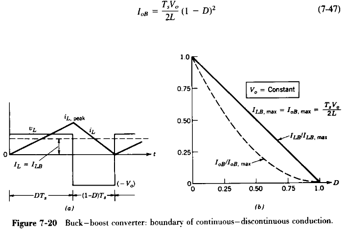
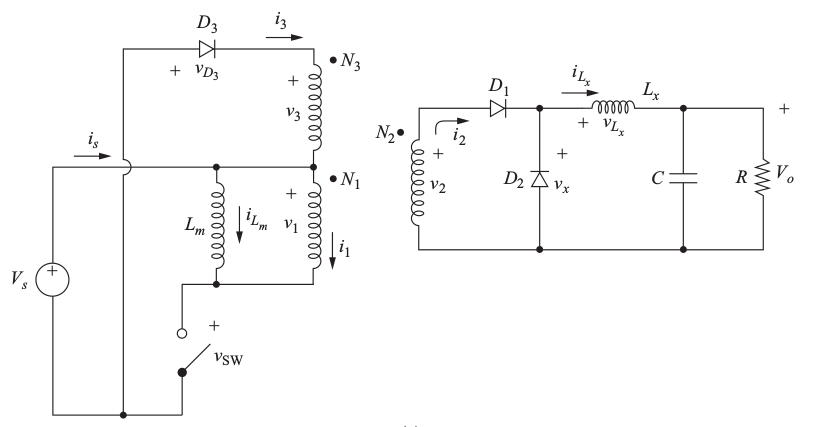
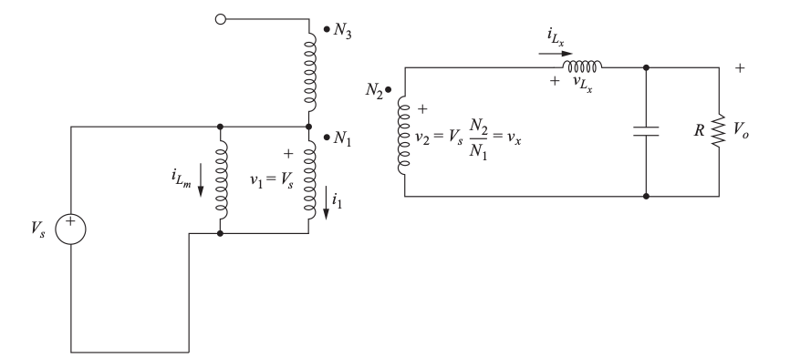
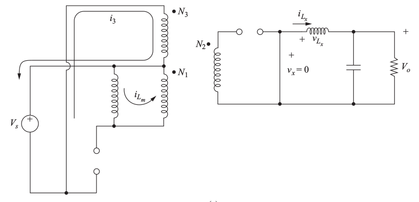
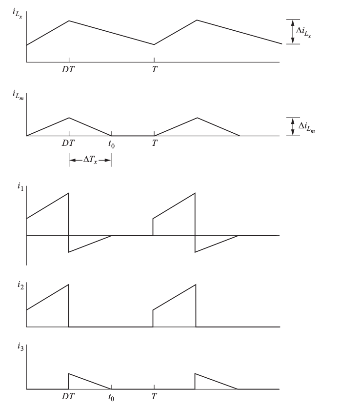
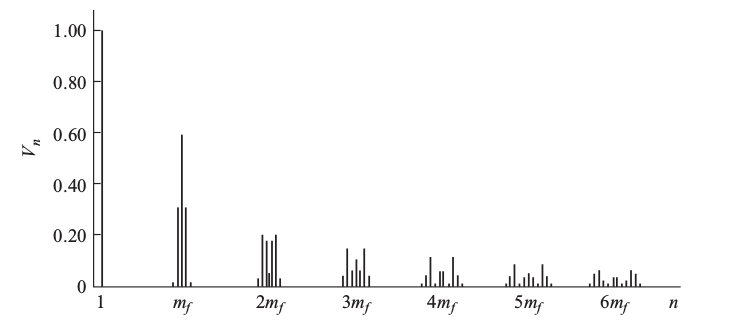
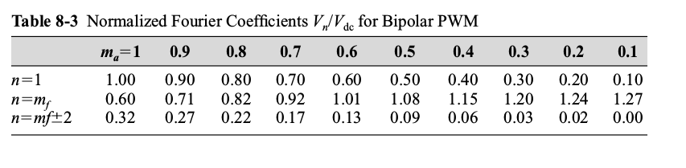

class: center, middle # EE-464 STATIC POWER CONVERSION-II # Midterm Recitation ## Ozan Keysan ## [keysan.me](http://keysan.me) ### Office: C-113 <span class="meta">•</span> Tel: 210 7586 --- # Ex. Mohan 10-3 -- ## In a regulated flyback converter with 1:1 turns ratio, Vo=12V, Vd=12-24V, Pload is 60W, and the switching frequency is 200 kHz. -- ## Calculate the maximum value of the magnetizing inductance Lm that can be used if the converter is always required to operate in a complete demagnetization (i.e. discontinuous conduction mode). --- # Ex. Mohan 10-3 -- ### 1:1 ratio means same as a buck-boost converter -- ### Refer to Mohan Section 7.5.2 --  --- # Ex. Mohan 10-5 -- ### A switch-mode supply with the following specs are designed: ### Vd=48 V ± 10%, ### Vo=5V, ### fs=100kHz, ### Pload=15-50W -- ### A forward converter is operating in continuous conduction mode with the demagnetizing winding (N3=N1). Assume ideal components (except transformer magnetization) --- # Ex. Mohan 10-5 -- ## a) Calculate N2/N1 if the turns ratio is desired to be as small as possible. -- ## b) Calculate the minimum value of filter inductance. --- # Ex. W.Hart 7.2 -- ## Design a converter to produce and output voltage of 36V from a 3.3V supply. The output current is 0.1 A. -- ## Design for an output ripple voltage of 2%. Include ESR when choosing a capacitor. -- ## Assume for this problem that the ESR is related to the capacitor value by \\(r\_c = 10^{-5}/C\\). --- # Ex. W.Hart 7.4 -- ### A forward converter of Fig. 7-5a has the following parameters: -- - ### Vs=48V - ### R= 10 Ohm - ### Lx = 0.4 mH, Lm = 5 mH - ### C=100 uF - ### f = 35 kHz - ### N1/N2= 1.5, N1/N3=1 - ### D=0.4 --- # Ex. W.Hart 7.4 ## a) Determine the output voltage, the maximum and minimum currents in Lx, and the output voltage ripple. -- ## b) Determine the peak curren in the transformer primary winding. Verify that the magnetizinf current is reset to zero during each switching period. --- # Ex. W.Hart 7.4 --  --- # Ex. W.Hart 7.4 --  --- # Ex. W.Hart 7.4 --  --- # Ex. W.Hart 7.4 --  --- # Ex. W.Hart 8.9 -- ## Design a bipolar PWM single phase inverter that will produce 75 Vrms, 60 Hz output from a 150 Vdc supply. -- ## Rload=12 Ohm, Lload=60mH. Select the switching frequency such that the current THD is less than 10 %. --- # Ex. W.Hart 8.9 --  --- # Ex. W.Hart 8.9 --  --- ## You can download this presentation from: [keysan.me/ee464](http://keysan.me/ee464)